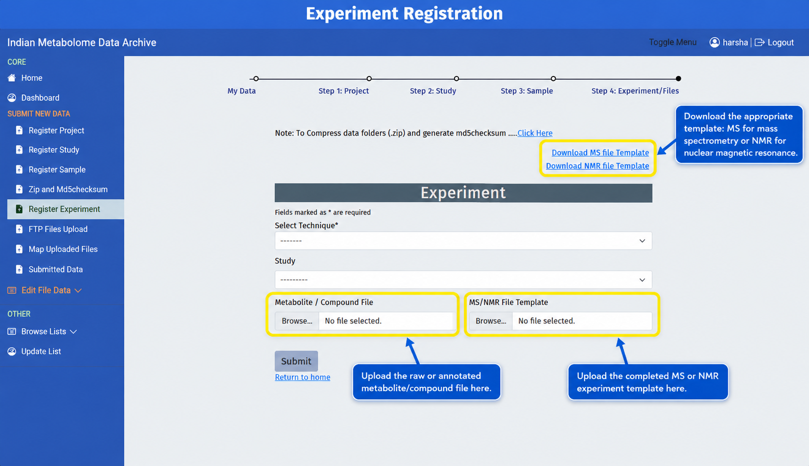
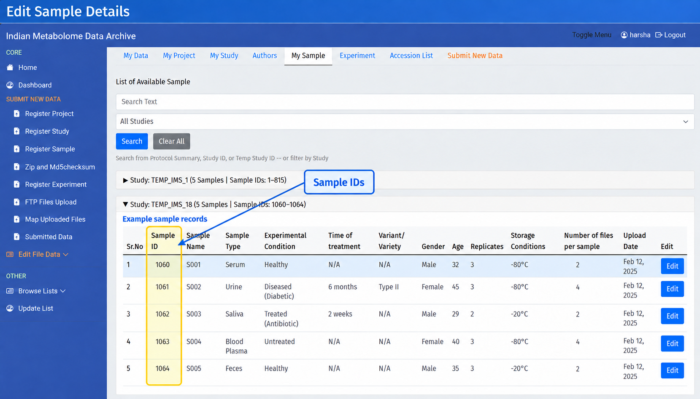
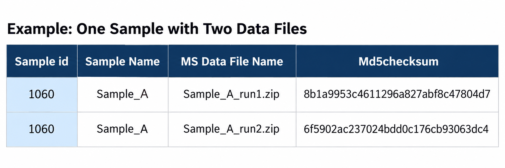

Experiment
Use Register Experiment from the left sidebar after registering samples and calculating the MD5 checksum for every final data file. Select the technique and Study ID, then upload the result file and completed MS or NMR template.

What This Record Describes
Experiment registration records the analytical assay metadata: how each sample was measured, which instrument and acquisition method were used, and which data file belongs to each Sample ID.
In this SOP, experiment is the IMDA portal name and assay is the internationally used metadata term for the analytical measurement. The instructions use the IMDA field names shown on screen.
Before You Begin
Keep the following ready:
- The correct Study ID and analytical technique: MS or NMR.
- IMDA-generated Sample IDs from My Sample.
- Final data-file names and one MD5 checksum for each file.
- Instrument, acquisition, chromatography, solvent, probe, and processing-software details that apply to the technique.
- The metabolite/compound result file. This file is compulsory for experiment registration.
What to Fill in the Portal
| Portal Field | What to Enter | Writing Guideline |
|---|---|---|
| Select Technique* | Select the experiment technique, such as MS or NMR. | Choose the same technique used in the study and template. |
| Study | Select the Study ID linked to this experiment. | Make sure the selected study belongs to the correct project. |
| Metabolite / Compound File* | Upload the processed metabolite/compound identification or quantification result file. This file is compulsory. | Use a clear file name. Do not use this field for the raw instrument data uploaded later through FTP. |
| MS/NMR File Template | Upload the completed MS or NMR Excel template. | Use MS template for mass spectrometry and NMR template for nuclear magnetic resonance. Do not change column headers. |
Where to Get Sample IDs
After sample registration, open My Sample to view the generated Sample ID values. Copy these IDs into the first column, Sample id, of the MS or NMR experiment template.

Sample ID Rule
Do not enter a local sample name in the Sample id column. Copy the IMDA-generated Sample ID exactly as shown in My Sample. If one sample has multiple data files, repeat that Sample ID once for each file row. For example, if Sample ID 1060 has two files, enter 1060 in two rows and provide the matching file name and checksum in each row.

Do Not Change Column Headers
Do not rename, delete, move, or reorder any column header in the Sample, MS, or NMR templates. Fill the templates using the original column names and order supplied by IMDA.
MS Template Columns
Download the MS file template when the study uses mass spectrometry. Fill one row for each sample-and-file combination.
Use Dropdown Values
In the MS template, columns such as Mass Spectrometer Type, MS Instrument Name, MS Instrument Type, MS Ionization Method, and Ion Mode/Scan Polarity have dropdown options. Select the closest correct value from the dropdown. Use Others only when the correct instrument or method is not available in the list.
| MS Template Column | What the User Should Fill |
|---|---|
| Sample id | First column in the MS template. Copy the IMDA-generated Sample ID from My Sample exactly. |
| Sample Name | Sample name used in the sample template. |
| Reference Standard | Reference or internal standard used during the assay. Enter NA only if it does not apply. |
| Chromatography Instrument Name | LC/GC/CE or other chromatography system used before MS. |
| Column Model | Chromatography column model/name. |
| Column Type | Column chemistry/type, such as C18, HILIC, GC column, or NA. |
| Mass Spectrometer Type | Select from the dropdown, such as LCMS, GCMS, ICP-MS, MALDI-TOF, Tandem MS, or the closest available type. |
| MS Instrument Name | Select the instrument model/name from the dropdown list. Example options include ABI Sciex, Agilent, Bruker, Thermo, Waters, Shimadzu, and other instrument entries. |
| MS Instrument Type | Select from the dropdown, such as Triple TOF, TOF, QTOF, Orbitrap, FT-ICR-MS, Single quadrupole, Triple quadrupole, or Others. |
| MS Ionization Method | Select from the dropdown, such as ESI, nano ESI, APCI, APPI, MALDI, EI, CI, FAB, DIOS, or Others. |
| Ion Mode/Scan Polarity | Select from the dropdown: Positive, Negative, or Positive;Negative. |
| Data Transformation(Software/s Used) | Software used to convert or process the data, such as ProteoWizard, XCMS, MZmine, vendor software, or NA. |
| MS Data File Name | Exact raw or ZIP data-file name that will be uploaded through FTP. Include the extension. |
| Md5checksum | MD5 checksum for the final uploaded MS data file. Generate it after the ZIP/file is final. |
Multiple Files for One Sample
If Number of files per sample is 2, create 2 rows for that sample in the MS template. Repeat the same Sample id and enter the matching MS Data File Name and Md5checksum for each file.
NMR Template Columns
Download the NMR file template when the study uses nuclear magnetic resonance. Fill one row for each sample-and-file combination.
Use Dropdown Values
In the NMR template, columns such as NMR Instrument Name, NMR Type, NMR Experiment Type, and NMR Solvent have dropdown options. Select the closest correct value from the dropdown. Use Others only when the correct solvent or option is not available in the list.
| NMR Template Column | What the User Should Fill |
|---|---|
| Sample id | First column in the NMR template. Copy the IMDA-generated Sample ID from My Sample exactly. |
| Sample Name | Sample name used in the sample template. |
| Reference Standard | Reference standard used for NMR. Enter NA if not applicable. |
| NMR Instrument Name | Select the instrument model/name from the dropdown list. Example options include Bruker and Jeol NMR instrument entries. |
| NMR Type | Select from the dropdown: Solution NMR or Solid State NMR. |
| NMR Experiment Type | Select from the dropdown, such as 1D 1H, 1D 13C, 1D 31P, 2D experiments, or the closest available option. |
| NMR Spectrometer Frequency | Spectrometer frequency, such as 400 MHz, 500 MHz, or 600 MHz. |
| NMR Probe | Probe used for acquisition. |
| NMR Probe Temperature | Probe/sample temperature during acquisition, with unit where possible. |
| NMR Solvent | Select from the dropdown, such as CCL4, CS2, CDCL3, C6D6, D2O, Acetone, DMSO, Methanol, Ethanol, or Others. |
| NMR Tube Size | Tube size, such as 5 mm, or NA if not applicable. |
| Data Transformation(Software/s Used) | Software used for processing/conversion. |
| NMR Data File Name | Exact raw or ZIP NMR data-file name that will be uploaded through FTP. Include the extension. |
| Md5checksum | MD5 checksum for the final uploaded NMR data file. Generate it after the ZIP/file is final. |
Multiple Files for One Sample
If Number of files per sample is 2, create 2 rows for that sample in the NMR template. Repeat the same Sample id and enter the matching NMR Data File Name and Md5checksum for each file.
Match Samples, Files, and Checksums
- Use the Sample IDs shown in My Sample after sample registration.
- Use the correct template for the selected technique.
- If one sample has multiple files, repeat the same Sample ID in multiple rows, one row per file.
- Keep uploaded file names exactly the same as the file names entered in the template.
- Generate the MD5 checksum only after the final file or ZIP is ready.
- Use NA for required fields that are genuinely not applicable.
Calculate MD5 Checksum First
Complete the MD5 checksum section before registering the experiment. Copy only the checksum value for the exact final file that will be uploaded.
Quality Check
Do not use local sample names where IMDA expects Sample IDs. Do not rename, delete, or reorder template columns. Confirm that the technique, Study ID, Sample ID, data-file name, and MD5 checksum describe the same final file.
Submit and Continue
- Download the correct MS or NMR template.
- Fill it using IMDA Sample IDs, exact final file names, and matching MD5 checksums.
- Upload the compulsory metabolite/compound result file.
- Upload the completed MS or NMR template.
- Click Submit, then continue to FTP File Uploads.